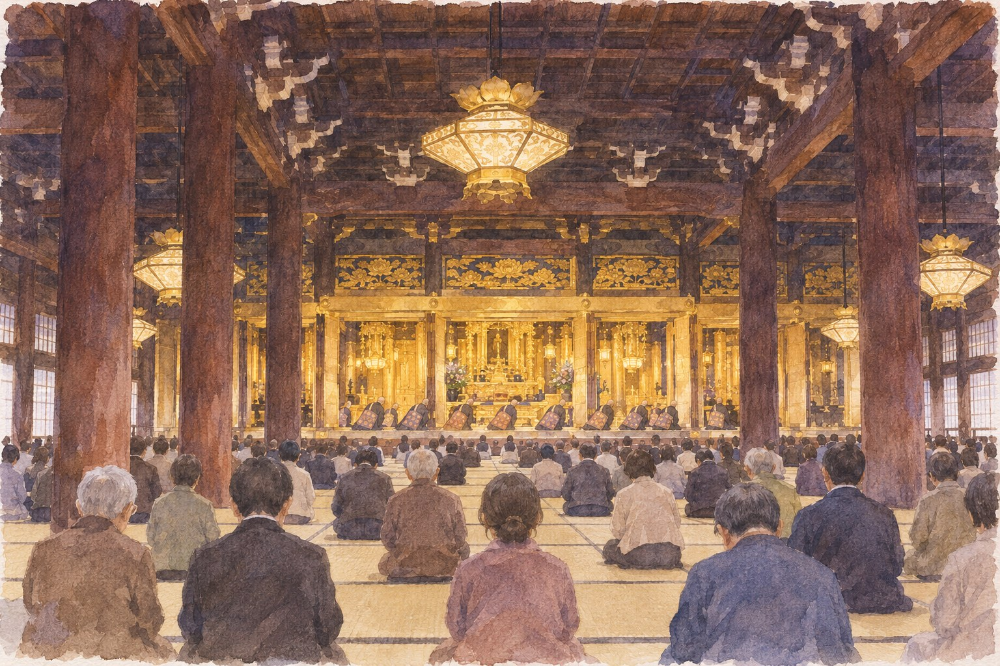

Kyoto · Higashi Honganji · Saturday 28 November 2026, 10:00
The Chant That Rocks Like a Boat
Once a year, on the morning of 28 November, the monks in the vast hall across the road from Kyoto Station chant while throwing their heads and bodies forward, back and side to side. Nobody is sure why. The temple only says it is the service that closes the year's biggest week.
坂東曲 bandō-bushi真宗本廟 東本願寺 · Shinshū HonbyōFacts checked 4 November 2026
You have walked past Higashi Honganji (東本願寺) a dozen times. It is the huge grey roof you see on the left as you leave Kyoto Station heading north, the one most people skip on the way to somewhere older. On an ordinary day that is a fair choice: a big hall, free entry, a few minutes of quiet.
On one morning a year it is not an ordinary hall. The last day of Hōonkō (報恩講), the week-long memorial for Shinran, the founder of the Jōdo Shinshū school, ends with a service called bandō-bushi (坂東曲). Rows of monks chant the nenbutsu and Shinran's hymns while rocking their upper bodies hard enough that one Kyodo News photo caption describes monks "intensively rocking their upper bodies." It is free, you do not apply, and you walk in.
The trade-off is real. It is a memorial service, not a show, all in Japanese, on a tatami floor with no chairs that day. What you get is something the other Honganji gave up in 1689, inside one of the largest wooden buildings in the world, ten minutes from the station.
Why this date, and why only here御正忌 · goshōki
Shinran died on the 28th day of the 11th month of Kōchō 2, in the old lunisolar calendar. When Japan switched to the solar calendar in 1873, the two great Honganji temples, a few hundred metres apart, made different choices. Nishi Honganji (西本願寺) converted the date and holds its memorial from 9 to 16 January. Higashi Honganji kept the numbers as written, so its Hōonkō runs from 21 to 28 November.
That is why "Hōonkō" in an English calendar can mean either January or November. If you want bandō-bushi, it has to be the east temple and it has to be November.
The same death date became two calendars' worth of memorials. Only the November one still sways.
What bandō-bushi is, and what nobody knows坂東曲 · bandō-bushi
The name means "the Bandō melody." Bandō (坂東) is the old word for the Kantō plain around today's Tokyo, where Shinran spent about twenty years after his exile from Kyoto. The chanting is ordinary Jōdo Shinshū material, the nenbutsu and the wasan hymns. What is not ordinary is the movement: each monk swings his head and torso in time, forward and back, left and right.
Japanese sources are honest that the origin is unknown, and list the theories side by side:
Shinran, exiled to Echigo on the Sea of Japan in 1207, chanted the nenbutsu in a boat pitching on rough water.
Shinran was caught in a storm on a boat while travelling in the Kantō, and kept chanting as it rocked.
Rennyo, the 15th-century leader, held the memorial on a boat when he left Yoshizaki in Echizen for Obama. An Edo-period ritual handbook already dismissed this one as baseless.
It was the way monks from Bandō chanted when they came to Kyoto to visit Shinran's grave.
Scholars have also pointed to a piece called "Bandō" in the rokusai nenbutsu repertoire still performed in Nara, and to fast dance-like chant in general. Pick whichever you like. The temple's own schedule makes no claim at all: it lists the service as 結願日中（坂東曲）and calls it the closing service of Hōonkō.
The striking fact is that both Honganji temples used to do it. According to a Honganji chronicle, the west temple dropped it in 1689 and replaced it with a calmer chant. The east temple kept it.

AI-generated illustration — not an on-site photograph. An imagined scene inspired by this section, not an accurate depiction of the real place, objects or event.
The second Bandō of the day教行信証 坂東本 · Kyōgyōshinshō, Bandō-bon
At 12:40 the same day, in the Amida Hall next door, a researcher from the temple's study institute explains Shinran's main work, the Kyōgyōshinshō (教行信証), using a facsimile of the copy known as the Bandō-bon (坂東本). It is called that because it was kept for centuries at Hōon-ji (報恩寺), a temple in Bandō founded by Shinran's disciple Shōshin. It is the only surviving copy in Shinran's own hand: most of the text was written around the age of sixty, with corrections in the margins into his last years. It was designated a National Treasure in 1952.
What is on the table is a facsimile, not the original, and the display is only out during the talk, which runs about 15 minutes. It is in Japanese. The reason to go is the coincidence: the chant and the book both carry the name of the plain where Shinran wrote and taught, and on this one day you can see both within three hours.
Both things you can see on 28 November are named after the same plain, three hundred kilometres east of the hall.
The hall itself御影堂 · Goei-dō
The service is held in the Founder's Hall (御影堂, Goei-dō), which houses a wooden image of Shinran. It is 76 metres across, 58 deep and 38 high, with 927 tatami mats inside, and was rebuilt in 1895 after the old hall burned in the fighting of 1864. Find the sign 御影堂 on the gateposts and follow the people with rosaries.
The hall is not a theatre. During a service the monks sit in the inner sanctuary, raised and further back, and lay visitors sit in the outer hall on the mats. Getting close to the front matters more than usual here, because the movement is what you came for. Arrive early.
If you are unsure where you may sit, ask one of the staff in the hall: どこに座ってもいいですか (doko ni suwatte mo ii desu ka).
Getting there: Kyoto Station (京都駅), Karasuma exit → walk north up Karasuma-dōri, about 10 min. The temple is at 烏丸通七条上る.
When: Hōonkō 21–28 November 2026. Closing service 結願日中（坂東曲） Saturday 28 November, 10:00, in the Goei-dō; its opening assembly with a talk starts at 9:00. During Hōonkō the temple announces early gate opening, from 5:00 on the 28th.
Cost: Free. No application: "直接御影堂へお入りください," go straight into the hall.
Reality check: No chairs on the 28th (on other days a few are kept for people who need them). Floor seating on tatami for a long service. I could not find a published running time for the bandō-bushi part, nor any rule on photography. Assume no photos during the service unless staff tell you otherwise.
Everything worth seeing on the 28th sits between 9:00 and 13:00; after lunch the week is over.
The gate, the meal, the garden御影堂門 · 渉成園
The Goei-dō Gate (御影堂門), the two-storey gate on Karasuma-dōri and an Important Cultural Property, opens its upper floor during Hōonkō, 10:00–16:30. On the 28th last entry is 12:30, which leaves very little time after the service: go up on the 26th or 27th if you are in Kyoto then. ¥1,000 (¥500 for high-school age and under).
Otoki (お斎) is the vegetarian meal served to worshippers in the Daishinden and Omote-koshoin halls. It must be booked, costs ¥4,500, and on the 28th there is a single sitting at 12:50, which clashes with the 12:40 talk. Choose one.
At the reception desk, before the day: お斎の予約はできますか (otoki no yoyaku wa dekimasu ka).
Shōsei-en (渉成園), the temple's detached garden two blocks east, is the place to sit down afterwards. November–February it opens 9:00–16:00 (last entry 15:30) for a garden-upkeep donation of ¥700 or more; check before you go, as late-autumn night events change the hours on some evenings.
Getting there: Shōsei-en is about 5 min on foot east of the main temple, across Karasuma-dōri.
Reality check: Otoki needs a reservation; I could not confirm whether places are still open for 2026. The temple's advance-registration window for Hōonkō closed on 30 October, but that only affects souvenirs and parking, not entry.
Everything on this map is walkable in under fifteen minutes; you need no train after you arrive at the station.
The evening before the end御伝鈔 · Godenshō
If you are in Kyoto earlier in the week, the other moment worth timing is Wednesday 25 November at 16:30, when the biography of Shinran is read aloud in the Goei-dō by candlelight. It is the same hall in a different light, and quieter than the 28th. It is also in classical Japanese; you are there for the voice and the dark, not the story.
When: Wed 25 November 2026, 16:30, Goei-dō, followed by the evening service.
Reality check: Free, no application. Late-November evenings are cold and you will be sitting still for a long time: dress for it.
The honest part
This is a Buddhist memorial with tens of minutes of chanting you will not understand, and you will be on your knees or cross-legged on tatami for it, because the 28th has no chairs. If sitting on the floor for an hour is hard for you, come on a weekday earlier in the week instead and accept that you will not see the swaying.
I could not find how long the bandō-bushi section lasts or how many monks take part, and the temple does not say. It is Saturday, the last day, the temple's biggest week: expect a full hall of people who came to pray, not to watch. They come first. Do not stand in front of anyone, do not hold up a phone, and if the hall is packed, watch from the back without complaint.
Higashi Honganji does not promote this in English, so there is no English programme or signage to rely on. The words you need on the day are on the gateposts and the schedule boards: 御影堂 (Founder's Hall), 阿弥陀堂 (Amida Hall), 結願 (closing day).
If you lose track of the time, ask a staff member: 坂東曲は何時からですか (bandō-bushi wa nanji kara desu ka).
If you only have one day
Saturday 28 November 2026. One line, all on foot from Kyoto Station.
Arrive Kyoto Station. Walk north on Karasuma-dōri, about 10 min. Enter through the Goei-dō Gate.
Into the Goei-dō. Take a place on the mats as far forward as staff allow. Stay put.
Assembly and talk (Japanese). Use it to settle in.
結願日中（坂東曲）. Watch the inner sanctuary.
Out to stretch, then to the Amida-dō next door.
The Bandō-bon talk, about 15 min, facsimile on display only during the talk.
Lunch near the station.
Shōsei-en garden, five minutes east. Last entry 15:30.
Running late? Drop the 9:00 talk and arrive at 9:40, but expect a seat further back. Never drop the 10:00.